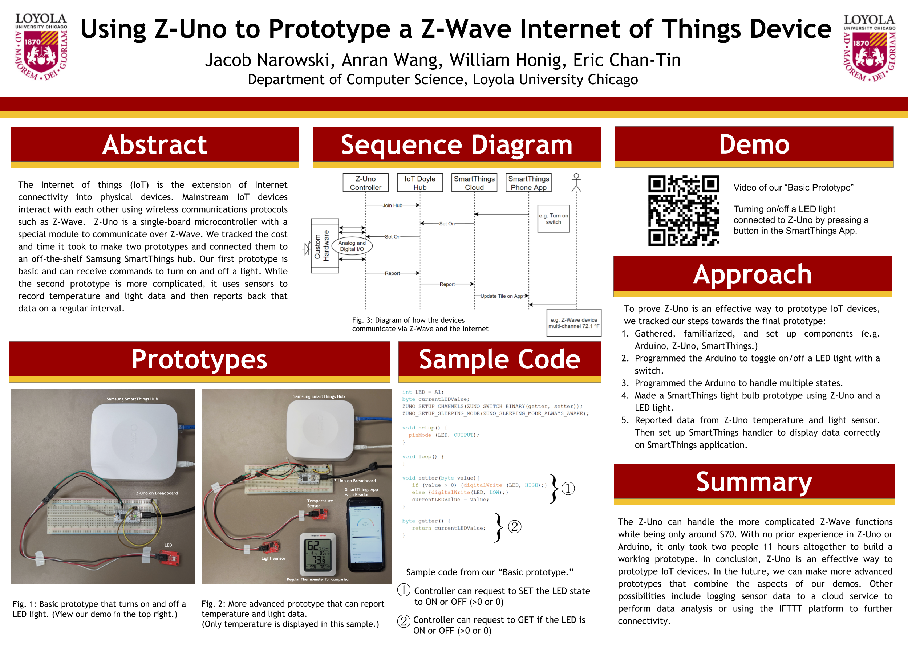
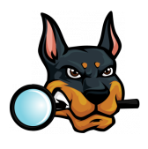
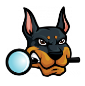
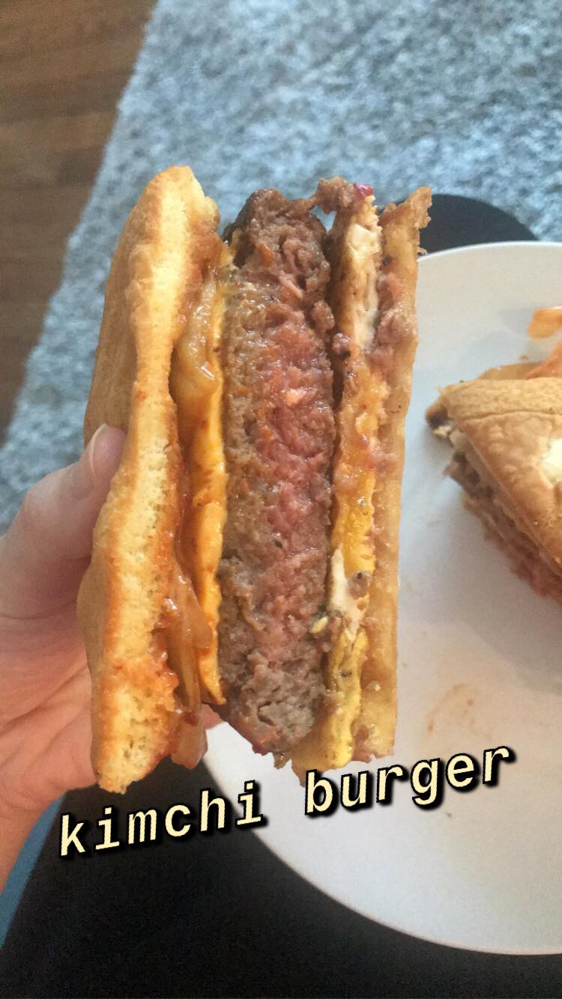
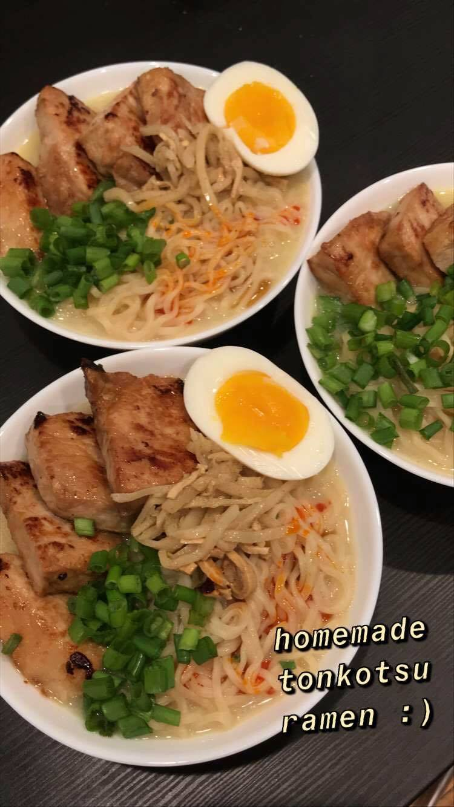
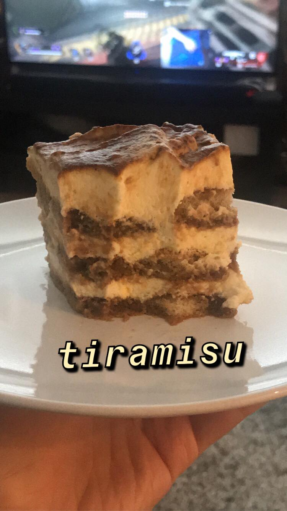

Anran Wang
Chicago · IL ·
anranwang4@gmail.com
Hello! I'm a senior majoring in Computer Science and minoring in Computer Crime & Forensics at Loyola University Chicago.
My passions range from cybersecurity to IoT programming and I'm actively looking for related CS internship opportunities!
Work Experience
Computer Science Tutor
LUC - Computer Science Department
- Tutor students in a range of classes including Object-Oriented Programming, Data Structures and Algorithms
- Review and debug students’ code in various programming languages, such as Java and Python
August 2020 – Present
Chinese Language Coach
LUC - Language Learning Resource Center
- Lead conversations with students to help them practice Chinese language skills
- Assist with rehearsing oral presentations and give guidelines on grammar exercises
September 2019 – Present
Global Ambassador
LUC - Undergraduate Admission Office
- Email and communicate with 100+ prospective overseas students
- Welcome and guide 500+ visitors during campus open house events
December 2018 - Present
Projects
Doyle Living Lab
Group project
- Automated logging atmospheric data from IoT sensor to Google Sheets
- Utilized Samsung SmartThings API and Google Sheets API, used Python to manipulate and analyze data
- Presented project in Computer Science Department end-of-semester party
Using Z-Uno to Prototype a Z-Wave IoT Device
Supervised Research Project
- Programmed the prototype to read from a temperature sensor then report back that data on a regular interval to the SmartThings mobile application
- Wrote program in C++ in the Arduino IDE
- Arranged daily discussions and feedback sessions with advisor

East Asian Textiles
Group Project
- Collaborated with a student to design a mockup site for the East Asian Textiles project
- Developed a custom WordPress theme from scratch
LeaguELO
Group project
- Developed an application that sorts 10 League of Legends players into two skill-balanced teams based on their in-game ranks
- Wrote a program to web crawl for player rank info from op.gg for analyzation
Stopwatch
Group project
- Worked with five students to implement a timer as an Android application with event-driven/asynchronous program execution and user-triggered input events
- Managed meetings and version control
Old School RuneScape Bot
Personal project
- Wrote a script that automated game character to kill NPCs and eat food from inventory when player health points falls low, implemented the RSBot API
Discord Bot
Personal project
- Programmed a simple bot that greets people and @mentions users when it detects them messaging “hello”
- Used discord.js to interact with the Discord API
Education
Loyola University Chicago
Bachelor of Science
Major - Computer Science
Minor - Computer Crime & Forensics
Cumulative GPA: 3.82/4.00
Don't Panic! CS - Head of Recruitment
Loyola Esports Club - Executive board
August 2017 – Present
Skills
Programming Languages & Tools
-


 



CTF competitions participation
- NCL Cyber Skyline
- Cyber Fire Puzzles
- MetaCTF
Interests
CS stuff aside, I enjoy sketching, gaming, playing the piano, and listening to podcasts. My favorite podcasts are Darknet Diaries, Hidden Brain and Philosophize This.
I'm also very passionate about cooking, especially Asian cuisine. I spend a lot of my free time exploring new recipes and mastering old ones. My best dishes are budae jjigae and tiramisu!
—How can I talk about cooking without showing these off? :)
  